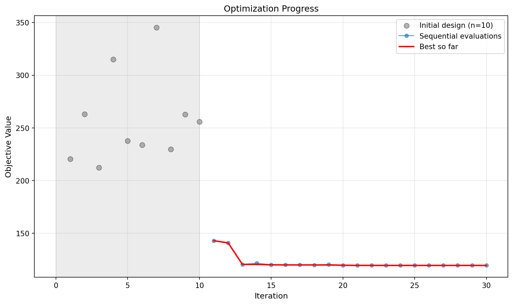
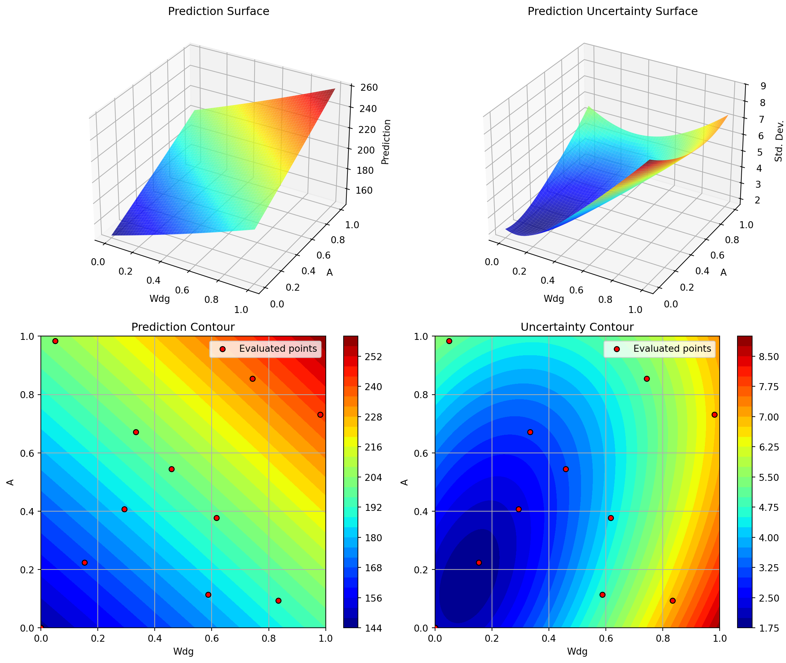
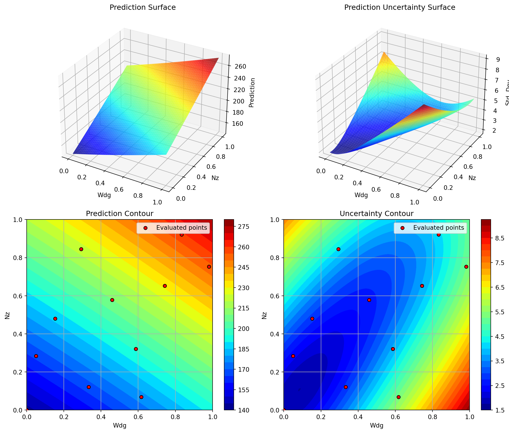
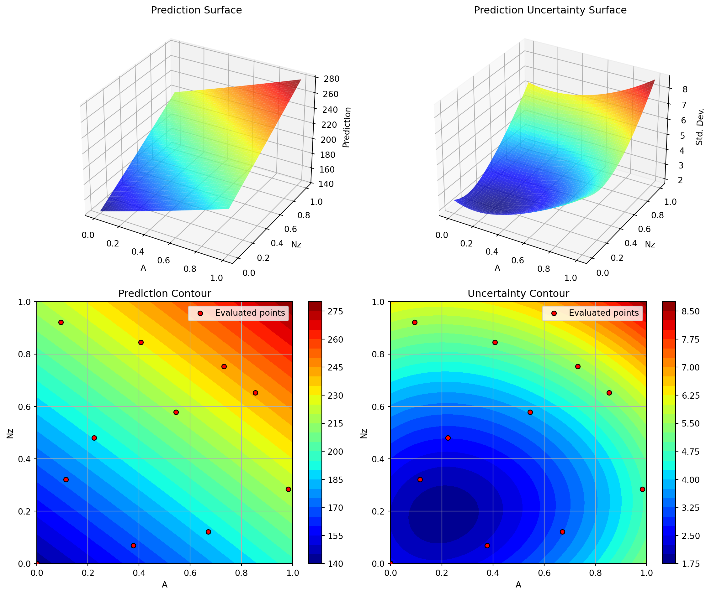
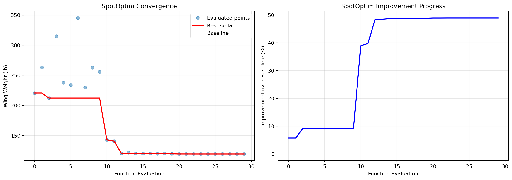
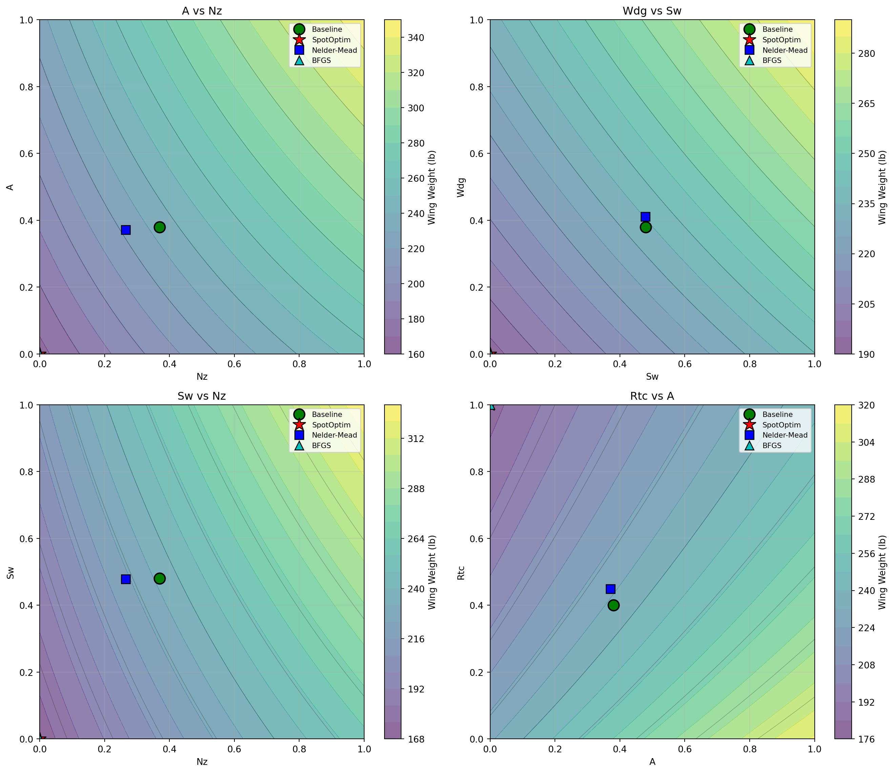

import numpy as np
import matplotlib.pyplot as plt
import pandas as pd
from scipy.optimize import minimize
from spotoptim import SpotOptim
import time
import pprint16 Optimizing the Aircraft Wing Weight Example
NoteNote
- This section demonstrates optimization of the Aircraft Wing Weight Example (AWWE) function
- We compare three optimization methods:
- SpotOptim: Bayesian optimization with Gaussian Process surrogate
- Nelder-Mead: Derivative-free simplex method from scipy.optimize
- BFGS: Quasi-Newton method from scipy.optimize
- The following Python packages are imported:
16.1 The AWWE Objective Function
We use the same AWWE function from Chapter 1, which models the weight of an unpainted light aircraft wing. The function accepts inputs in the unit cube \([0,1]^9\) and returns the wing weight.
def wingwt(x):
"""
Aircraft Wing Weight function.
Args:
x: array-like of 9 values in [0,1]
[Sw, Wfw, A, L, q, l, Rtc, Nz, Wdg]
Returns:
Wing weight (scalar)
"""
# Ensure x is a 2D array for batch evaluation
x = np.atleast_2d(x)
# Transform from unit cube to natural scales
Sw = x[:, 0] * (200 - 150) + 150
Wfw = x[:, 1] * (300 - 220) + 220
A = x[:, 2] * (10 - 6) + 6
L = (x[:, 3] * (10 - (-10)) - 10) * np.pi/180
q = x[:, 4] * (45 - 16) + 16
l = x[:, 5] * (1 - 0.5) + 0.5
Rtc = x[:, 6] * (0.18 - 0.08) + 0.08
Nz = x[:, 7] * (6 - 2.5) + 2.5
Wdg = x[:, 8] * (2500 - 1700) + 1700
# Calculate weight on natural scale
W = 0.036 * Sw**0.758 * Wfw**0.0035 * (A/np.cos(L)**2)**0.6 * q**0.006
W = W * l**0.04 * (100*Rtc/np.cos(L))**(-0.3) * (Nz*Wdg)**(0.49)
return W.ravel()
# Wrapper for scipy.optimize (expects 1D input, returns scalar)
def wingwt_scipy(x):
return float(wingwt(x.reshape(1, -1))[0])16.2 Baseline Configuration
The baseline Cessna C172 Skyhawk configuration (coded in unit cube):
baseline_coded = np.array([0.48, 0.4, 0.38, 0.5, 0.62, 0.344, 0.4, 0.37, 0.38])
baseline_weight = wingwt(baseline_coded)[0]
print(f"Baseline wing weight: {baseline_weight:.2f} lb")Baseline wing weight: 233.91 lb16.3 Optimization Setup
We’ll optimize the AWWE function starting from the baseline configuration using three different methods:
- SpotOptim: Bayesian optimization (good for expensive black-box functions)
- Nelder-Mead: Derivative-free simplex method (robust but can be slow)
- BFGS: Quasi-Newton method (fast but requires smooth functions)
# Starting point (baseline configuration)
x0 = baseline_coded.copy()
# Bounds for all methods (unit cube)
bounds = [(0, 1)] * 9
# Number of function evaluations budget
max_evals = 30
print(f"Starting point: {x0}")
print(f"Starting weight: {baseline_weight:.2f} lb")Starting point: [0.48 0.4 0.38 0.5 0.62 0.344 0.4 0.37 0.38 ]
Starting weight: 233.91 lb16.4 Method 1: SpotOptim (Surrogate Model Based Optimization)
# Start timing
start_time = time.time()
# Configure SpotOptim
optimizer_spot = SpotOptim(
fun=wingwt,
bounds=bounds,
x0=None,
max_iter=max_evals,
n_initial=10, # Initial design points
var_name=['Sw', 'Wfw', 'A', 'L', 'q', 'l', 'Rtc', 'Nz', 'Wdg'],
acquisition='y', # ei: Expected Improvement
max_surrogate_points=100,
seed=42,
verbose=True,
tensorboard_log=True,
tensorboard_clean=True
)Removed old TensorBoard logs: runs/spotoptim_20251202_003129
Cleaned 1 old TensorBoard log directory
TensorBoard logging enabled: runs/spotoptim_20251202_02433216.5 Design Table
pprint.pprint(optimizer_spot.print_design_table())('| name | type | lower | upper | default | trans |\n'
'|--------|--------|---------|---------|-----------|---------|\n'
'| Sw | float | 0.0000 | 1.0000 | 0.5000 | - |\n'
'| Wfw | float | 0.0000 | 1.0000 | 0.5000 | - |\n'
'| A | float | 0.0000 | 1.0000 | 0.5000 | - |\n'
'| L | float | 0.0000 | 1.0000 | 0.5000 | - |\n'
'| q | float | 0.0000 | 1.0000 | 0.5000 | - |\n'
'| l | float | 0.0000 | 1.0000 | 0.5000 | - |\n'
'| Rtc | float | 0.0000 | 1.0000 | 0.5000 | - |\n'
'| Nz | float | 0.0000 | 1.0000 | 0.5000 | - |\n'
'| Wdg | float | 0.0000 | 1.0000 | 0.5000 | - |')16.6 Run optimization
result_spot = optimizer_spot.optimize()Initial best: f(x) = 212.219714
Iteration 1: New best f(x) = 142.977744
Iteration 2: New best f(x) = 140.904175
Iteration 3: New best f(x) = 120.465251
Iteration 4: f(x) = 121.575842
Iteration 5: New best f(x) = 120.101053
Iteration 6: New best f(x) = 119.997018
Iteration 7: f(x) = 120.018134
Iteration 8: New best f(x) = 119.958665
Iteration 9: f(x) = 120.386522
Iteration 10: New best f(x) = 119.691338
Iteration 11: New best f(x) = 119.530080
Iteration 12: f(x) = 119.539469
Iteration 13: New best f(x) = 119.503677
Iteration 14: f(x) = 119.503691
Iteration 15: New best f(x) = 119.503672
Iteration 16: f(x) = 119.503718
Iteration 17: f(x) = 119.503685
Iteration 18: f(x) = 119.503693
Iteration 19: f(x) = 119.503726
Iteration 20: f(x) = 119.503749
TensorBoard writer closed. View logs with: tensorboard --logdir=runs/spotoptim_20251202_024332# End timing
spot_time = time.time() - start_time
print(f"\nSpotOptim Results:")
print(f" Best weight: {result_spot.fun:.4f} lb")
print(f" Function evaluations: {result_spot.nfev}")
print(f" Time elapsed: {spot_time:.2f} seconds")
print(f" Success: {result_spot.success}")
SpotOptim Results:
Best weight: 119.5037 lb
Function evaluations: 30
Time elapsed: 6.69 seconds
Success: Trueoptimizer_spot.print_best()
Best Solution Found:
--------------------------------------------------
Sw: 0.0000
Wfw: 0.0000
A: 0.0000
L: 0.5000
q: 0.0000
l: 0.0000
Rtc: 1.0000
Nz: 0.0000
Wdg: 0.0000
Objective Value: 119.5037
Total Evaluations: 3016.7 Result Table
pprint.pprint(optimizer_spot.print_results_table(show_importance=True))('| name | type | lower | upper | tuned | trans | importance | '
'stars |\n'
'|--------|--------|---------|---------|---------|---------|--------------|---------|\n'
'| Sw | float | 0.0000 | 1.0000 | 0.0000 | - | 9.52 | '
'* |\n'
'| Wfw | float | 0.0000 | 1.0000 | 0.0000 | - | 12.76 | '
'* |\n'
'| A | float | 0.0000 | 1.0000 | 0.0000 | - | 14.11 | '
'* |\n'
'| L | float | 0.0000 | 1.0000 | 0.5000 | - | 4.30 | '
'* |\n'
'| q | float | 0.0000 | 1.0000 | 0.0000 | - | 6.10 | '
'* |\n'
'| l | float | 0.0000 | 1.0000 | 0.0000 | - | 11.05 | '
'* |\n'
'| Rtc | float | 0.0000 | 1.0000 | 1.0000 | - | 13.87 | '
'* |\n'
'| Nz | float | 0.0000 | 1.0000 | 0.0000 | - | 14.03 | '
'* |\n'
'| Wdg | float | 0.0000 | 1.0000 | 0.0000 | - | 14.27 | '
'* |\n'
'\n'
'Interpretation: ***: >95%, **: >50%, *: >1%, .: >0.1%')16.8 Progress of the Optimization
optimizer_spot.plot_progress(log_y=False)
16.9 Contour Plots of Most Important Hyperparameters
optimizer_spot.plot_important_hyperparameter_contour(max_imp=3)Plotting surrogate contours for top 3 most important parameters:
Wdg: importance = 14.27% (type: float)
A: importance = 14.11% (type: float)
Nz: importance = 14.03% (type: float)
Generating 3 surrogate plots...
Plotting Wdg vs A
Plotting Wdg vs Nz
Plotting A vs Nz
16.10 Method 2: Nelder-Mead Simplex
print("\n" + "=" * 60)
print("Running Nelder-Mead Simplex...")
print("=" * 60)
# Start timing
start_time = time.time()
# Run optimization
result_nm = minimize(
wingwt_scipy,
x0=x0,
method='Nelder-Mead',
bounds=bounds,
options={'maxfev': max_evals, 'disp': True}
)
# End timing
nm_time = time.time() - start_time
print(f"\nNelder-Mead Results:")
print(f" Best weight: {result_nm.fun:.4f} lb")
print(f" Function evaluations: {result_nm.nfev}")
print(f" Time elapsed: {nm_time:.2f} seconds")
print(f" Success: {result_nm.success}")
============================================================
Running Nelder-Mead Simplex...
============================================================
Nelder-Mead Results:
Best weight: 220.5449 lb
Function evaluations: 30
Time elapsed: 0.00 seconds
Success: False16.11 Method 3: BFGS (Quasi-Newton)
print("\n" + "=" * 60)
print("Running BFGS (Quasi-Newton)...")
print("=" * 60)
# Start timing
start_time = time.time()
# Run optimization
result_bfgs = minimize(
wingwt_scipy,
x0=x0,
method='L-BFGS-B', # Bounded BFGS
bounds=bounds,
options={'maxfun': max_evals, 'disp': True}
)
# End timing
bfgs_time = time.time() - start_time
print(f"\nBFGS Results:")
print(f" Best weight: {result_bfgs.fun:.4f} lb")
print(f" Function evaluations: {result_bfgs.nfev}")
print(f" Time elapsed: {bfgs_time:.2f} seconds")
print(f" Success: {result_bfgs.success}")
============================================================
Running BFGS (Quasi-Newton)...
============================================================
BFGS Results:
Best weight: 119.5037 lb
Function evaluations: 60
Time elapsed: 0.00 seconds
Success: False16.12 Comparison of Results
# Create comparison DataFrame
comparison = pd.DataFrame({
'Method': ['Baseline', 'SpotOptim', 'Nelder-Mead', 'BFGS'],
'Best Weight (lb)': [
baseline_weight,
result_spot.fun,
result_nm.fun,
result_bfgs.fun
],
'Improvement (%)': [
0.0,
(baseline_weight - result_spot.fun) / baseline_weight * 100,
(baseline_weight - result_nm.fun) / baseline_weight * 100,
(baseline_weight - result_bfgs.fun) / baseline_weight * 100
],
'Function Evals': [
1,
result_spot.nfev,
result_nm.nfev,
result_bfgs.nfev
],
'Time (s)': [
0.0,
spot_time,
nm_time,
bfgs_time
],
'Success': [
True,
result_spot.success,
result_nm.success,
result_bfgs.success
]
})
print("\n" + "=" * 80)
print("OPTIMIZATION COMPARISON")
print("=" * 80)
print(comparison.to_string(index=False))
print("=" * 80)
================================================================================
OPTIMIZATION COMPARISON
================================================================================
Method Best Weight (lb) Improvement (%) Function Evals Time (s) Success
Baseline 233.908405 0.000000 1 0.000000 True
SpotOptim 119.503672 48.910057 30 6.687483 True
Nelder-Mead 220.544928 5.713124 30 0.000900 False
BFGS 119.503672 48.910057 60 0.001468 False
================================================================================16.13 Visualization: Convergence Plots
16.13.1 SpotOptim Convergence
fig, (ax1, ax2) = plt.subplots(1, 2, figsize=(14, 5))
# Plot 1: Best value over iterations
y_history = optimizer_spot.y_
best_so_far = np.minimum.accumulate(y_history)
ax1.plot(range(len(y_history)), y_history, 'o', alpha=0.5, label='Evaluated points')
ax1.plot(range(len(best_so_far)), best_so_far, 'r-', linewidth=2, label='Best so far')
ax1.axhline(y=baseline_weight, color='g', linestyle='--', label='Baseline')
ax1.set_xlabel('Function Evaluation')
ax1.set_ylabel('Wing Weight (lb)')
ax1.set_title('SpotOptim Convergence')
ax1.legend()
ax1.grid(True, alpha=0.3)
# Plot 2: Improvement over baseline
improvement = (baseline_weight - best_so_far) / baseline_weight * 100
ax2.plot(range(len(improvement)), improvement, 'b-', linewidth=2)
ax2.set_xlabel('Function Evaluation')
ax2.set_ylabel('Improvement over Baseline (%)')
ax2.set_title('SpotOptim Improvement Progress')
ax2.grid(True, alpha=0.3)
ax2.axhline(y=0, color='k', linestyle='-', alpha=0.3)
plt.tight_layout()
plt.show()
16.14 Optimal Parameter Values
Let’s examine the optimal parameter values found by each method:
# Parameter names
param_names = ['Sw', 'Wfw', 'A', 'L', 'q', 'l', 'Rtc', 'Nz', 'Wdg']
# Transform from unit cube to natural scales
def decode_params(x):
scales = [
(150, 200), # Sw
(220, 300), # Wfw
(6, 10), # A
(-10, 10), # L (degrees)
(16, 45), # q
(0.5, 1), # l
(0.08, 0.18), # Rtc
(2.5, 6), # Nz
(1700, 2500) # Wdg
]
decoded = []
for i, (low, high) in enumerate(scales):
decoded.append(x[i] * (high - low) + low)
return decoded
# Create comparison table
baseline_decoded = decode_params(baseline_coded)
spot_decoded = decode_params(result_spot.x)
nm_decoded = decode_params(result_nm.x)
bfgs_decoded = decode_params(result_bfgs.x)
param_comparison = pd.DataFrame({
'Parameter': param_names,
'Baseline': baseline_decoded,
'SpotOptim': spot_decoded,
'Nelder-Mead': nm_decoded,
'BFGS': bfgs_decoded
})
print("\n" + "=" * 100)
print("OPTIMAL PARAMETER VALUES (Natural Scale)")
print("=" * 100)
print(param_comparison.to_string(index=False))
print("=" * 100)
====================================================================================================
OPTIMAL PARAMETER VALUES (Natural Scale)
====================================================================================================
Parameter Baseline SpotOptim Nelder-Mead BFGS
Sw 174.000 150.000000 173.923947 150.00
Wfw 252.000 220.000000 254.534988 220.00
A 7.520 6.000000 7.484111 6.00
L 0.000 0.000531 -0.126137 0.00
q 33.980 16.000000 34.156818 16.00
l 0.672 0.500000 0.674613 0.50
Rtc 0.120 0.180000 0.124872 0.18
Nz 3.795 2.500000 3.427058 2.50
Wdg 2004.000 1700.000000 2028.938270 1700.00
====================================================================================================16.15 Analysis of Optimal Solutions
# Calculate percentage changes from baseline
changes_spot = [(spot_decoded[i] - baseline_decoded[i]) / baseline_decoded[i] * 100
for i in range(len(param_names))]
changes_nm = [(nm_decoded[i] - baseline_decoded[i]) / baseline_decoded[i] * 100
for i in range(len(param_names))]
changes_bfgs = [(bfgs_decoded[i] - baseline_decoded[i]) / baseline_decoded[i] * 100
for i in range(len(param_names))]
# Visualization
fig, axes = plt.subplots(1, 3, figsize=(18, 5))
for ax, changes, method in zip(axes,
[changes_spot, changes_nm, changes_bfgs],
['SpotOptim', 'Nelder-Mead', 'BFGS']):
colors = ['red' if c < 0 else 'green' for c in changes]
ax.barh(param_names, changes, color=colors, alpha=0.6)
ax.axvline(x=0, color='black', linestyle='-', linewidth=0.5)
ax.set_xlabel('Change from Baseline (%)')
ax.set_title(f'{method}: Parameter Changes')
ax.grid(True, alpha=0.3, axis='x')
plt.tight_layout()
plt.show()
16.16 Key Insights from Optimal Solutions
# Find parameters with largest changes for each method
def analyze_changes(decoded, baseline_decoded, method_name):
changes = {param_names[i]: decoded[i] - baseline_decoded[i]
for i in range(len(param_names))}
sorted_changes = sorted(changes.items(), key=lambda x: abs(x[1]), reverse=True)
print(f"\n{method_name} - Top 5 Parameter Changes:")
print("-" * 50)
for param, change in sorted_changes[:5]:
idx = param_names.index(param)
pct = change / baseline_decoded[idx] * 100
print(f" {param:5s}: {change:+8.2f} ({pct:+6.1f}%)")
analyze_changes(spot_decoded, baseline_decoded, "SpotOptim")
analyze_changes(nm_decoded, baseline_decoded, "Nelder-Mead")
analyze_changes(bfgs_decoded, baseline_decoded, "BFGS")
SpotOptim - Top 5 Parameter Changes:
--------------------------------------------------
Wdg : -304.00 ( -15.2%)
Wfw : -32.00 ( -12.7%)
Sw : -24.00 ( -13.8%)
q : -17.98 ( -52.9%)
A : -1.52 ( -20.2%)
Nelder-Mead - Top 5 Parameter Changes:
--------------------------------------------------
Wdg : +24.94 ( +1.2%)
Wfw : +2.53 ( +1.0%)
Nz : -0.37 ( -9.7%)
q : +0.18 ( +0.5%)
L : -0.13 ( -inf%)
BFGS - Top 5 Parameter Changes:
--------------------------------------------------
Wdg : -304.00 ( -15.2%)
Wfw : -32.00 ( -12.7%)
Sw : -24.00 ( -13.8%)
q : -17.98 ( -52.9%)
A : -1.52 ( -20.2%)16.17 Method Efficiency Comparison
# Calculate efficiency metrics
efficiency = pd.DataFrame({
'Method': ['SpotOptim', 'Nelder-Mead', 'BFGS'],
'Weight Reduction (lb)': [
baseline_weight - result_spot.fun,
baseline_weight - result_nm.fun,
baseline_weight - result_bfgs.fun
],
'Evals to Best': [
np.argmin(optimizer_spot.y_) + 1,
result_nm.nfev,
result_bfgs.nfev
],
'Time per Eval (ms)': [
spot_time / result_spot.nfev * 1000,
nm_time / result_nm.nfev * 1000,
bfgs_time / result_bfgs.nfev * 1000
]
})
print("\n" + "=" * 80)
print("METHOD EFFICIENCY METRICS")
print("=" * 80)
print(efficiency.to_string(index=False))
print("=" * 80)
================================================================================
METHOD EFFICIENCY METRICS
================================================================================
Method Weight Reduction (lb) Evals to Best Time per Eval (ms)
SpotOptim 114.404734 25 222.916102
Nelder-Mead 13.363478 30 0.029993
BFGS 114.404734 60 0.024470
================================================================================16.18 Visualization: 2D Slices of Optimal Solutions
Let’s visualize how the optimal solutions compare in the most important 2D subspaces:
# Create 2D slices showing optimal points
fig, axes = plt.subplots(2, 2, figsize=(14, 12))
# Important parameter pairs based on sensitivity analysis
pairs = [
(7, 2), # Nz vs A (load factor vs aspect ratio)
(0, 8), # Sw vs Wdg (wing area vs gross weight)
(7, 0), # Nz vs Sw (load factor vs wing area)
(2, 6) # A vs Rtc (aspect ratio vs thickness ratio)
]
for ax, (i, j) in zip(axes.flat, pairs):
# Create meshgrid for contour plot
x_range = np.linspace(0, 1, 50)
y_range = np.linspace(0, 1, 50)
X, Y = np.meshgrid(x_range, y_range)
# Evaluate function on grid (fixing other parameters at baseline)
Z = np.zeros_like(X)
for ii in range(X.shape[0]):
for jj in range(X.shape[1]):
point = baseline_coded.copy()
point[i] = X[ii, jj]
point[j] = Y[ii, jj]
Z[ii, jj] = wingwt(point)[0]
# Plot contours
contour = ax.contourf(X, Y, Z, levels=20, cmap='viridis', alpha=0.6)
ax.contour(X, Y, Z, levels=10, colors='black', alpha=0.3, linewidths=0.5)
# Plot optimal points
ax.plot(baseline_coded[i], baseline_coded[j], 'go', markersize=12,
label='Baseline', markeredgecolor='black', markeredgewidth=1.5)
ax.plot(result_spot.x[i], result_spot.x[j], 'r*', markersize=15,
label='SpotOptim', markeredgecolor='black', markeredgewidth=1)
ax.plot(result_nm.x[i], result_nm.x[j], 'bs', markersize=10,
label='Nelder-Mead', markeredgecolor='black', markeredgewidth=1)
ax.plot(result_bfgs.x[i], result_bfgs.x[j], 'c^', markersize=10,
label='BFGS', markeredgecolor='black', markeredgewidth=1)
ax.set_xlabel(param_names[i])
ax.set_ylabel(param_names[j])
ax.set_title(f'{param_names[j]} vs {param_names[i]}')
ax.legend(loc='best', fontsize=8)
ax.grid(True, alpha=0.3)
# Add colorbar
plt.colorbar(contour, ax=ax, label='Wing Weight (lb)')
plt.tight_layout()
plt.show()
16.19 Conclusion
This analysis demonstrates the application of different optimization methods to the Aircraft Wing Weight Example. Key takeaways:
- SpotOptim provides efficient global optimization with good exploration of the design space
- Nelder-Mead offers robust derivative-free optimization but may require more evaluations
- BFGS converges quickly for smooth problems but can get trapped in local minima
For aircraft design problems with expensive simulations, Bayesian optimization (SpotOptim) offers the best balance of efficiency and solution quality, making it particularly suitable for real-world engineering applications.
16.20 Jupyter Notebook
Note
- The Jupyter-Notebook of this lecture is available on GitHub in the Hyperparameter-Tuning-Cookbook Repository